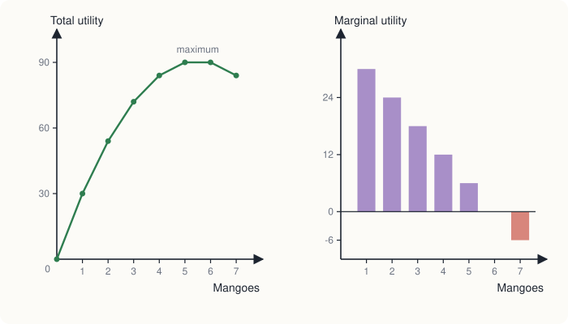

Chapter 5: Utility and Consumer Choice¶
How a consumer with a limited budget decides what to buy
Learning outcomes
After studying this chapter you should be able to:
- Explain what economists mean by preferences and utility, and state the usual assumptions about preferences.
- Distinguish total utility from marginal utility and state the law of diminishing marginal utility.
- Use the equimarginal principle to find the best way to spend a budget on two goods.
- Derive an individual demand curve from marginal utility, and relate it to consumer surplus.
- Resolve the diamond-water paradox.
- Explain the difference between cardinal and ordinal utility, and why economists prefer the second.
5.1 Preferences and utility¶
The demand curve of Chapter 2 summarises how much buyers want to buy at each price. This chapter and the next look behind it, at the individual consumer who must decide how to spend a limited income on many goods. The theory is built on two ideas: what the consumer wants (her preferences) and what she can afford (her budget).
Preferences¶
A consumer's preferences describe how she ranks different bundles of goods: two cups of tea and one samosa, or one cup of tea and three samosas. Economists make a few assumptions about preferences, which seem reasonable for most purposes.
- Completeness. Faced with any two bundles A and B, the consumer can say whether she prefers A, prefers B, or is indifferent between them.
- Transitivity. If she prefers A to B and B to C, she prefers A to C. Without this, choice would be incoherent: she could be led round in a circle.
- More is better (non-satiation). Other things equal, she prefers a bundle with more of a good to one with less. This applies to goods; for things like pollution or noise, less is better.
A consumer whose choices satisfy these assumptions and who chooses the bundle she most prefers among those she can afford is called rational in economics. The word does not mean that her tastes are sensible, only that her choices are consistent with her own tastes. Chapter 13 asks how far real people behave like this.
Utility¶
Utility is the satisfaction or benefit that a consumer gets from consuming goods and services. Economists in the nineteenth century, among them William Stanley Jevons, Carl Menger and Léon Walras, who in the 1870s independently developed the idea of marginal utility, thought of utility as something that could in principle be measured, in units called utils. This is cardinal utility: the numbers themselves have meaning, so that 20 utils is twice as much satisfaction as 10.
This chapter uses cardinal utility because it makes the logic of choice easy to see. Section 5.6 explains why modern theory needs much less, and Chapter 6 develops the modern approach.
5.2 Total utility and marginal utility¶
Total utility (TU) is the whole satisfaction a consumer gets from consuming a given quantity of a good. Marginal utility (MU) is the extra utility from consuming one more unit:
Table 5.1 shows the utility that Meera gets from eating mangoes on a summer afternoon.
| Mangoes eaten | Total utility (utils) | Marginal utility (utils) |
|---|---|---|
| 0 | 0 | |
| 1 | 30 | 30 |
| 2 | 54 | 24 |
| 3 | 72 | 18 |
| 4 | 84 | 12 |
| 5 | 90 | 6 |
| 6 | 90 | 0 |
| 7 | 84 | −6 |
Table 5.1. Meera's total and marginal utility from mangoes.

The law of diminishing marginal utility¶
The table and Figure 5.1 show a pattern that holds for almost every good: as a consumer consumes more of a good in a given period, the marginal utility of each extra unit eventually falls. The first mango on a hot afternoon is delicious; the fourth is pleasant; the sixth adds nothing; the seventh makes Meera feel ill. This is the law of diminishing marginal utility.
Three points follow from the table.
- Total utility rises as long as marginal utility is positive, and it rises more and more slowly as marginal utility falls.
- Total utility is at its maximum when marginal utility is zero (at the sixth mango; Meera is equally happy with 5 or 6).
- When marginal utility becomes negative, total utility falls. A consumer who had to pay nothing would stop where marginal utility reached zero.
On a graph, marginal utility is the slope of the total utility curve: the total utility curve is steep where marginal utility is high and flat where it is zero.
Note
Diminishing marginal utility is about consuming more within a period. It does not say that Meera will enjoy mangoes less next week. It also does not hold for every good at every quantity: the second sock of a pair may give more utility than the first. But over most of the range in which people actually buy goods, it is a good description.
5.3 Choosing with a budget: the equimarginal principle¶
Free mangoes would be eaten until marginal utility is zero. But goods are not free, and income is limited. How should a consumer divide a fixed budget among several goods?
Suppose Kabir has ₹20 a day to spend on two goods, X (biscuits, ₹2 a packet) and Y (cups of juice, ₹4 a cup). His marginal utilities are shown in Table 5.2, together with the marginal utility per rupee, \(MU/P\).
| Units | \(MU_X\) | \(MU_X / P_X\) (\(P_X = 2\)) | \(MU_Y\) | \(MU_Y / P_Y\) (\(P_Y = 4\)) |
|---|---|---|---|---|
| 1 | 24 | 12 | 40 | 10 |
| 2 | 20 | 10 | 32 | 8 |
| 3 | 16 | 8 | 24 | 6 |
| 4 | 12 | 6 | 20 | 5 |
| 5 | 8 | 4 | 12 | 3 |
| 6 | 4 | 2 | 8 | 2 |
Table 5.2. Kabir's marginal utilities and marginal utilities per rupee.
The key insight is that what matters is not the marginal utility of a good but the marginal utility per rupee spent on it. A cup of juice gives more utility than a packet of biscuits, but it also costs twice as much. Each rupee should go where it buys the most extra utility.
Example 5.1 Spending ₹20 one step at a time
Kabir spends his money a little at a time, each time buying the unit that gives the highest marginal utility per rupee. Find the bundle he ends with.
Solution.
| Step | Unit bought | \(MU/P\) | Money spent so far (₹) |
|---|---|---|---|
| 1 | 1st biscuit packet | 12 | 2 |
| 2 | 2nd biscuit packet | 10 | 4 |
| 3 | 1st juice | 10 | 8 |
| 4 | 3rd biscuit packet | 8 | 10 |
| 5 | 2nd juice | 8 | 14 |
| 6 | 4th biscuit packet | 6 | 16 |
| 7 | 3rd juice | 6 | 20 |
He ends with 4 packets of biscuits and 3 cups of juice, spending \(4 \times 2 + 3 \times 4 = 20\) rupees, exactly his budget. At this bundle the marginal utility per rupee is the same for both goods: \(12/2 = 6\) and \(24/4 = 6\). His total utility is \((24 + 20 + 16 + 12) + (40 + 32 + 24) = 72 + 96 = 168\) utils.
We can check that no other affordable bundle does better. The bundles that use the whole ₹20 and are within the table are:
| Biscuits (X) | Juice (Y) | Total utility from X | Total utility from Y | Total utility |
|---|---|---|---|---|
| 6 | 2 | 84 | 72 | 156 |
| 4 | 3 | 72 | 96 | 168 |
| 2 | 4 | 44 | 116 | 160 |
| 0 | 5 | 0 | 128 | 128 |
Table 5.3. Total utility of the bundles that cost exactly ₹20.
The rule¶
The result is the equimarginal principle (or the law of equi-marginal utility): a consumer maximises utility by spending her whole budget so that the marginal utility per rupee is the same for every good she buys.
Why must this be so? Suppose instead that \(MU_X/P_X = 10\) and \(MU_Y/P_Y = 6\). Then moving one rupee from Y to X would lose about 6 utils and gain about 10, raising total utility. The consumer should keep moving money towards X. As she buys more X, its marginal utility falls (diminishing marginal utility), and as she buys less Y, its marginal utility rises, until the two ratios are equal. Only then is there no gain from rearranging her spending.
Key idea
Spend each rupee where it adds the most utility. At the best bundle, the last rupee spent on every good brings the same extra utility. The same principle guides any allocation of a limited resource: a student dividing study time among subjects should stop adding hours to one subject when an extra hour on another would raise her marks more.
5.4 From marginal utility to the demand curve¶
The equimarginal principle explains the law of demand. Suppose the price of X rises while everything else stays the same. Then \(MU_X/P_X\) falls below \(MU_Y/P_Y\), and the consumer gets more utility per rupee by spending less on X and more on other goods. She buys less X. So a higher price leads to a smaller quantity demanded.
The link is clearest if we measure marginal utility directly in money: the most a consumer would pay for one more unit. This is the marginal benefit of Chapter 1 and the willingness to pay of Chapter 4.
Example 5.2 An individual demand curve
The most that Meera would pay for each successive mango in a week is: ₹60 for the first, ₹48 for the second, ₹36 for the third, ₹24 for the fourth, ₹12 for the fifth and nothing for the sixth. How many mangoes does she buy at a price of ₹30? At ₹20? What is her consumer surplus in each case?
Solution. She buys a mango as long as its value to her is at least its price.
At ₹30 she buys the first three (worth ₹60, ₹48 and ₹36) but not the fourth (₹24). Her consumer surplus is \((60 - 30) + (48 - 30) + (36 - 30) = 30 + 18 + 6 = 54\) rupees.
At ₹20 she buys four. Her consumer surplus is \(40 + 28 + 16 + 4 = 88\) rupees.
Listing the quantity she buys at each price gives her demand schedule: 1 mango at prices from ₹49 to ₹60, 2 at ₹37 to ₹48, 3 at ₹25 to ₹36, 4 at ₹13 to ₹24, and 5 at ₹1 to ₹12. Her demand curve is the staircase traced by her marginal values: the demand curve is the marginal benefit curve.
This is why a demand curve slopes down: because of diminishing marginal utility, each extra unit is worth less to the buyer, so she will buy more units only at a lower price. It is also why consumer surplus is the area between the demand curve and the price, as Chapter 4 said.
Caution
Measuring utility in rupees assumes that the marginal utility of money itself stays roughly constant over the range considered. That is reasonable when a good takes a small share of the budget, as mangoes do. It is not reasonable for large purchases such as a house, where spending changes how much each remaining rupee is worth. Chapter 6 handles this properly with the income effect.
5.5 The diamond-water paradox¶
Water is essential to life; diamonds are not. Yet water is cheap and diamonds are expensive. Adam Smith, in The Wealth of Nations (1776), noted this puzzle: things with the greatest "value in use" often have little "value in exchange", and the reverse. How can it be explained?
The answer is the distinction between total and marginal utility.
- The total utility of water is enormous: without any water we would die. But water is plentiful, so we consume a great deal of it, and the marginal utility of the last litre (used to wash a car or water a garden) is very small.
- The total utility of diamonds is modest: people can live perfectly well without them. But diamonds are scarce, so we consume very few, and the marginal utility of one more diamond is high.
A consumer following the equimarginal principle buys each good until its marginal utility per rupee is equal to that of other goods. So price reflects marginal utility, not total utility. Water is cheap because the last unit of it is worth little to us, not because water as a whole is unimportant. The consumer surplus from water, the difference between its total value and what we pay for it, is enormous; the consumer surplus from diamonds is much smaller.
The same reasoning explains why a sudden shortage changes prices so much. In a drought, the quantity of water available falls, its marginal utility rises sharply, and people would pay a great deal for the last litre. Prices measure the value of the marginal unit, and the marginal unit depends on scarcity.
5.6 Cardinal and ordinal utility¶
The cardinal approach assumes that utility can be measured in utils, so that one can say a bundle gives "168 utils" and another "160". There is no instrument that measures satisfaction, and no reason to think that 168 utils for Kabir means the same as 168 utils for Meera. Is the theory then built on sand?
Fortunately, it is not, because the choices of the consumer depend only on the ranking of bundles, not on the numbers. Look again at Table 5.3. Kabir chooses the bundle (4, 3) because it ranks above the others. If every utility number were doubled, or had 100 added to it, or were replaced by its square, the ranking would be the same and so would his choice. Utility numbers that only express a ranking are called ordinal utility: they say "first, second, third" but not "how much more".
Modern consumer theory therefore uses only ordinal utility. It needs to know, for any two bundles, which the consumer prefers, but not by how much. The tool for doing this is the indifference curve, introduced by Francis Ysidro Edgeworth in 1881, developed by Vilfredo Pareto, and made the basis of demand theory by John Hicks and R. G. D. Allen in the 1930s. It is the subject of the next chapter. The main conclusions of this chapter (the law of demand, the equality of marginal benefit and price at the best choice) carry over, with the equimarginal principle reappearing as the tangency of an indifference curve and a budget line.
| Cardinal approach (this chapter) | Ordinal approach (Chapter 6) | |
|---|---|---|
| Assumes utility can be | measured in units | ranked only |
| Main tool | marginal utility schedules | indifference curves and budget lines |
| Condition for the best choice | \(MU_X/P_X = MU_Y/P_Y\) | slope of indifference curve = slope of budget line |
| Separates income and substitution effects | no | yes |
Table 5.4. The cardinal and ordinal approaches compared.
5.7 Summary¶
- A consumer's preferences rank bundles of goods. They are assumed to be complete, transitive and to satisfy more is better.
- Total utility is the satisfaction from a quantity of a good; marginal utility is the extra satisfaction from one more unit.
- The law of diminishing marginal utility: within a period, marginal utility eventually falls as consumption rises. Total utility is greatest where marginal utility is zero.
- The equimarginal principle: to maximise utility, spend the whole budget so that \(MU/P\) is equal for every good bought.
- A higher price lowers \(MU/P\) for the good, so the consumer buys less: this explains the law of demand. Measured in money, the demand curve is the marginal benefit curve, and consumer surplus is the area between it and the price.
- The diamond-water paradox is resolved by noting that price reflects marginal, not total, utility.
- Consumer choice depends only on the ranking of bundles, so modern theory uses ordinal utility and indifference curves.
5.8 Exercises¶
Exercise 1
Complete the table and state where total utility is at its maximum.
| Cups of tea | Total utility | Marginal utility |
|---|---|---|
| 1 | 20 | |
| 2 | 35 | |
| 3 | 45 | |
| 4 | 50 | |
| 5 | 50 | |
| 6 | 45 |
Answer
Marginal utilities: 20, 15, 10, 5, 0, −5. Total utility is greatest (50) at 4 or 5 cups, where marginal utility falls to zero.
Exercise 2
A consumer buys two goods. At her current purchases, \(MU_A = 30\), \(P_A = 5\), \(MU_B = 40\) and \(P_B = 10\). Is she maximising utility? If not, how should she change her spending?
Answer
\(MU_A/P_A = 6\) and \(MU_B/P_B = 4\). They are not equal, so she is not maximising utility. A rupee spent on A brings more utility than one spent on B, so she should buy more A and less B until the ratios are equal.
Exercise 3
In Example 5.1, suppose Kabir's budget rises to ₹28 while prices stay the same. Using Table 5.2, find his new best bundle.
Answer
Continuing the steps: after ₹20 he has X = 4, Y = 3. The next highest \(MU/P\) values are \(Y_4\) (5), then \(X_5\) (4). Buying the 4th juice costs ₹4 (total ₹24); buying the 5th biscuit packet costs ₹2 (total ₹26); the next are \(Y_5\) (3), then \(X_6\) and \(Y_6\) (2). With ₹2 left he can buy \(X_6\) (\(MU/P = 2\)) but not \(Y_5\). So he buys X = 6, Y = 4, spending \(12 + 16 = 28\) rupees. (Check the alternative X = 4, Y = 5, which also costs ₹28: total utility \(72 + 128 = 200\), against \(84 + 116 = 200\) for (6, 4). The two bundles are equally good. With whole units, the ratios cannot always be made exactly equal.)
Exercise 4
The most Rohan would pay for successive cinema tickets in a month is ₹500, ₹350, ₹250, ₹150 and ₹100. How many tickets does he buy if a ticket costs ₹200? What is his consumer surplus?
Answer
He buys tickets worth at least ₹200 to him: 3 tickets. Consumer surplus \(= (500 - 200) + (350 - 200) + (250 - 200) = 300 + 150 + 50 =\) ₹500.
Exercise 5
Explain why air, which is essential to life, has no price, using the idea of marginal utility.
Answer
Air in the open is so plentiful that people consume as much as they want, and the marginal utility of one more breath is zero. Price reflects marginal utility, not total utility, so air has no price even though its total utility is immense. (Clean air in a polluted city, or compressed air for a diver, is scarce and does have a price.)
Exercise 6
Kabir's utility numbers in Table 5.3 are all multiplied by 3. Does his choice change? What does this show?
Answer
No. Multiplying every number by 3 keeps the ranking of bundles the same, so (4, 3) is still the best. Choice depends only on the ranking, which is why ordinal utility is enough for consumer theory.
5.9 Quiz¶
Check your understanding of Chapter 5
Exercise 1
Total utility rises from 40 to 52 when a fourth unit is consumed. What is the marginal utility of the fourth unit?
Answer
12
Exercise 2
Total utility is at its maximum when marginal utility is
- at its maximum
- equal to price
- zero
- negative
Answer
zero
Exercise 3
A consumer is at the best bundle when
- the marginal utility of every good is the same
- the marginal utility per rupee is the same for every good, and the budget is spent
- total utility from each good is the same
- she spends the same amount on each good
Answer
the marginal utility per rupee is the same for every good, and the budget is spent
Exercise 4
MU of A is 20 at a price of ₹4, and MU of B is 30 at a price of ₹5. The consumer should
- buy more A and less B
- buy more B and less A
- keep her purchases as they are
- stop buying both
Answer
buy more B and less A
MU/P is 5 for A and 6 for B, so a rupee buys more utility when spent on B.
Exercise 5
The diamond-water paradox is explained by the fact that price reflects
- total utility
- marginal utility
- the cost of production only
- government policy
Answer
marginal utility
Exercise 6
Ordinal utility means that utility numbers
- measure satisfaction in units
- can be compared between people
- show only the ranking of bundles
- must be whole numbers
Answer
show only the ranking of bundles